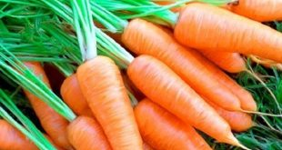
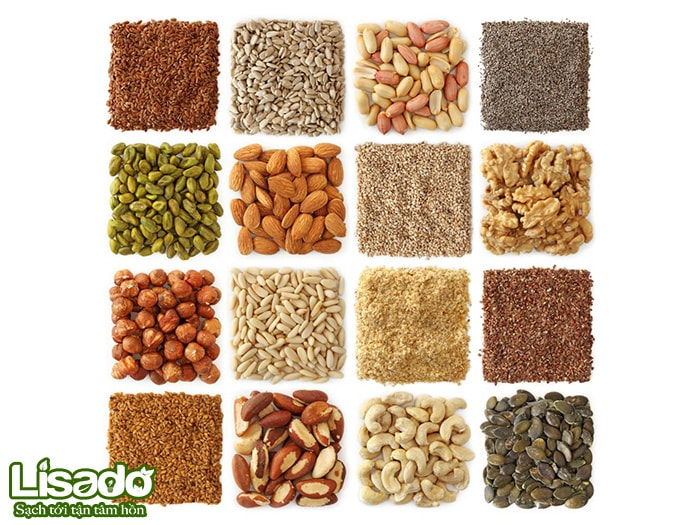
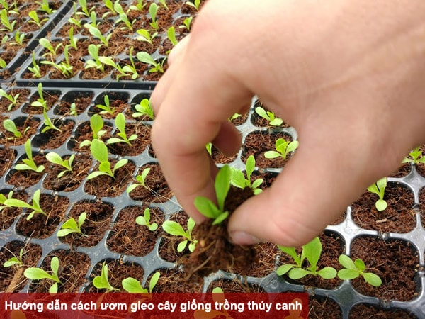
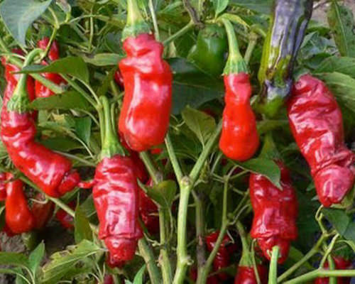

Đưa dừa bến tre ra thi trường thế giới Dừa là cây trồng chủ lực của tỉnh Bến Tre, nhưng không dễ để giải quyết bài toán: làm sao tạo ra những sản phẩm tận dụng được toàn bộ sản lượng làm ra. |

7 năm cải tạo 20.000 ha cà phê già, tăng 30% thu nhập nông dân Là dự án được Nestlé chủ động triển khai từ năm 2011 đến nay, Nescafé Plan đã góp phần thúc đẩy sự phát triển bền vững của ngành cà phê trên địa bàn Tây Nguyên. |
|

Kỹ thuật trồng cà rốt và cách chăm sóc cho năng suất chất lượng cao Trồng cà rốt, một trong những cây rau củ đã quá quen thuộc với cuộc sống con người Việt Nam. Tuy nhiên làm thế nào để trồng cà rốt cho hiệu quả thì chưa chắc ai cũng biết. Sau đây là bài viết chia sẻ về kỹ thuật trồng cà rốt cho năng suất chất lượng tốt nhất. Chúng tôi … |
|

Hướng dẫn cách bảo quản hạt giống Muốn đảm bảo chất lượng hạt giống cây trồng, có thể sử dụng sang vụ sau bạn cần bảo quản hạt giống đúng cách. Vậy cách bảo quản hạt giống rau như thế nào? Cần lưu ý điều gì khi bảo quản? |
|

Hướng dẫn cashc ươm gieo hạt cây giống trồng thủy canh Là dự án được Nestlé chủ động triển khai từ năm 2011 đến nay, Nescafé Plan đã góp phần thúc đẩy sự phát triển bền vững của ngành cà phê trên địa bàn Tây Nguyên. |
|

Ớt là một trong những gia vị dùng để chế biến những món ăn quen thuộc trong bữa ăn hàng ngày. Ngày nay, ớt không chỉ được trồng để làm gia vị mà còn được trồng làm cảnh,…Dưới đây là tổng hợp một số loại ớt dễ trồng |